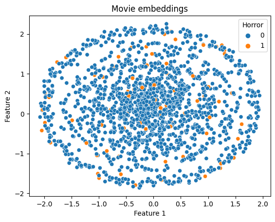
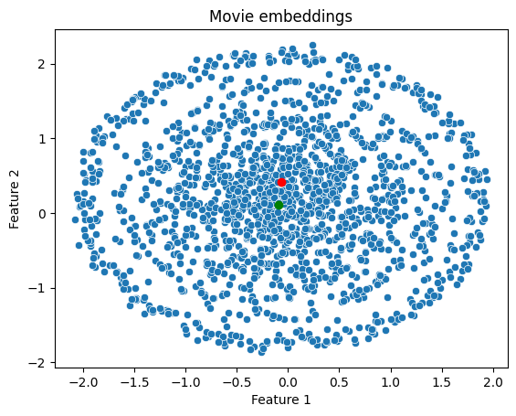
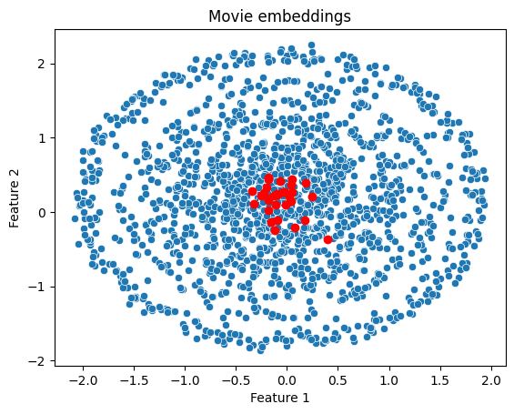
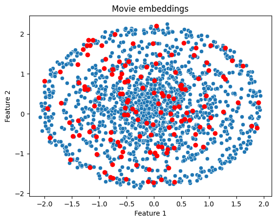
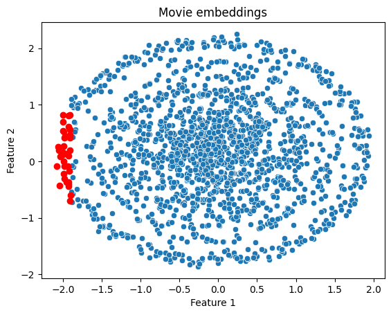
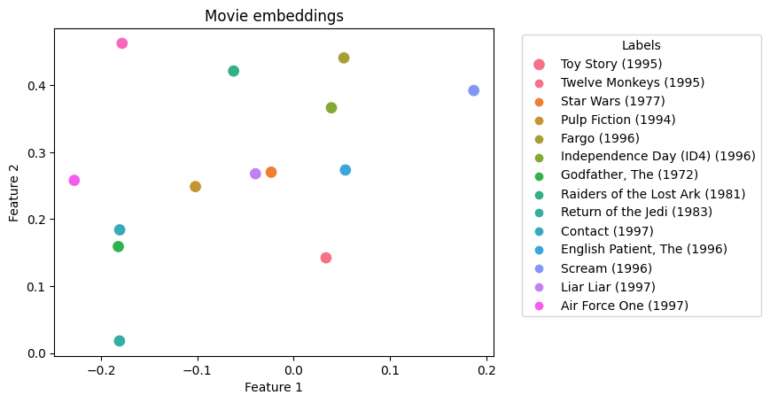
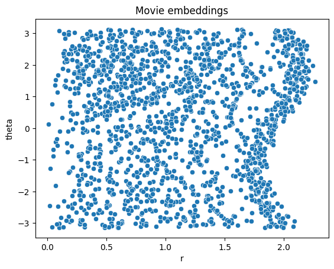
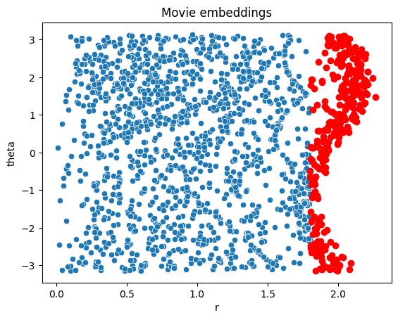

import numpy as np
import pandas as pd
import torchSVD

!wget 'https://files.grouplens.org/datasets/movielens/ml-100k.zip' './'--2023-09-25 12:22:25-- https://files.grouplens.org/datasets/movielens/ml-100k.zip
Resolving files.grouplens.org (files.grouplens.org)... 128.101.65.152
Connecting to files.grouplens.org (files.grouplens.org)|128.101.65.152|:443... connected.
HTTP request sent, awaiting response... 200 OK
Length: 4924029 (4.7M) [application/zip]
Saving to: ‘ml-100k.zip’
ml-100k.zip 100%[===================>] 4.70M 9.91MB/s in 0.5s
2023-09-25 12:22:26 (9.91 MB/s) - ‘ml-100k.zip’ saved [4924029/4924029]
--2023-09-25 12:22:26-- http://./
Resolving . (.)... failed: No address associated with hostname.
wget: unable to resolve host address ‘.’
FINISHED --2023-09-25 12:22:26--
Total wall clock time: 1.0s
Downloaded: 1 files, 4.7M in 0.5s (9.91 MB/s)!unzip './ml-100k.zip'Archive: ./ml-100k.zip
creating: ml-100k/
inflating: ml-100k/allbut.pl
inflating: ml-100k/mku.sh
inflating: ml-100k/README
inflating: ml-100k/u.data
inflating: ml-100k/u.genre
inflating: ml-100k/u.info
inflating: ml-100k/u.item
inflating: ml-100k/u.occupation
inflating: ml-100k/u.user
inflating: ml-100k/u1.base
inflating: ml-100k/u1.test
inflating: ml-100k/u2.base
inflating: ml-100k/u2.test
inflating: ml-100k/u3.base
inflating: ml-100k/u3.test
inflating: ml-100k/u4.base
inflating: ml-100k/u4.test
inflating: ml-100k/u5.base
inflating: ml-100k/u5.test
inflating: ml-100k/ua.base
inflating: ml-100k/ua.test
inflating: ml-100k/ub.base
inflating: ml-100k/ub.test movie_columns = ['movie id' , 'movie title' , 'release date' , 'video release date' ,
'IMDb URL' , 'unknown' , 'Action' , 'Adventure' , 'Animation' ,
"Children's" , 'Comedy' , 'Crime' , 'Documentary' , 'Drama' , 'Fantasy' ,
'Film-Noir' , 'Horror' , 'Musical' , 'Mystery' , 'Romance' , 'Sci-Fi' ,
'Thriller' , 'War' , 'Western' ]
movies = pd.read_csv('./ml-100k/u.item', sep='|', encoding='latin-1', names = movie_columns)
movies| movie id | movie title | release date | video release date | IMDb URL | unknown | Action | Adventure | Animation | Children's | ... | Fantasy | Film-Noir | Horror | Musical | Mystery | Romance | Sci-Fi | Thriller | War | Western | |
|---|---|---|---|---|---|---|---|---|---|---|---|---|---|---|---|---|---|---|---|---|---|
| 0 | 1 | Toy Story (1995) | 01-Jan-1995 | NaN | http://us.imdb.com/M/title-exact?Toy%20Story%2... | 0 | 0 | 0 | 1 | 1 | ... | 0 | 0 | 0 | 0 | 0 | 0 | 0 | 0 | 0 | 0 |
| 1 | 2 | GoldenEye (1995) | 01-Jan-1995 | NaN | http://us.imdb.com/M/title-exact?GoldenEye%20(... | 0 | 1 | 1 | 0 | 0 | ... | 0 | 0 | 0 | 0 | 0 | 0 | 0 | 1 | 0 | 0 |
| 2 | 3 | Four Rooms (1995) | 01-Jan-1995 | NaN | http://us.imdb.com/M/title-exact?Four%20Rooms%... | 0 | 0 | 0 | 0 | 0 | ... | 0 | 0 | 0 | 0 | 0 | 0 | 0 | 1 | 0 | 0 |
| 3 | 4 | Get Shorty (1995) | 01-Jan-1995 | NaN | http://us.imdb.com/M/title-exact?Get%20Shorty%... | 0 | 1 | 0 | 0 | 0 | ... | 0 | 0 | 0 | 0 | 0 | 0 | 0 | 0 | 0 | 0 |
| 4 | 5 | Copycat (1995) | 01-Jan-1995 | NaN | http://us.imdb.com/M/title-exact?Copycat%20(1995) | 0 | 0 | 0 | 0 | 0 | ... | 0 | 0 | 0 | 0 | 0 | 0 | 0 | 1 | 0 | 0 |
| ... | ... | ... | ... | ... | ... | ... | ... | ... | ... | ... | ... | ... | ... | ... | ... | ... | ... | ... | ... | ... | ... |
| 1677 | 1678 | Mat' i syn (1997) | 06-Feb-1998 | NaN | http://us.imdb.com/M/title-exact?Mat%27+i+syn+... | 0 | 0 | 0 | 0 | 0 | ... | 0 | 0 | 0 | 0 | 0 | 0 | 0 | 0 | 0 | 0 |
| 1678 | 1679 | B. Monkey (1998) | 06-Feb-1998 | NaN | http://us.imdb.com/M/title-exact?B%2E+Monkey+(... | 0 | 0 | 0 | 0 | 0 | ... | 0 | 0 | 0 | 0 | 0 | 1 | 0 | 1 | 0 | 0 |
| 1679 | 1680 | Sliding Doors (1998) | 01-Jan-1998 | NaN | http://us.imdb.com/Title?Sliding+Doors+(1998) | 0 | 0 | 0 | 0 | 0 | ... | 0 | 0 | 0 | 0 | 0 | 1 | 0 | 0 | 0 | 0 |
| 1680 | 1681 | You So Crazy (1994) | 01-Jan-1994 | NaN | http://us.imdb.com/M/title-exact?You%20So%20Cr... | 0 | 0 | 0 | 0 | 0 | ... | 0 | 0 | 0 | 0 | 0 | 0 | 0 | 0 | 0 | 0 |
| 1681 | 1682 | Scream of Stone (Schrei aus Stein) (1991) | 08-Mar-1996 | NaN | http://us.imdb.com/M/title-exact?Schrei%20aus%... | 0 | 0 | 0 | 0 | 0 | ... | 0 | 0 | 0 | 0 | 0 | 0 | 0 | 0 | 0 | 0 |
1682 rows × 24 columns
genres = movies.columns[6:].to_numpy()
def create_genre(row):
genre_int = row[6:]
index = np.where(genre_int==1)
# return genres[index[0]]
return ' '.join(genres[index[0]])movies['Genre'] = movies.apply(create_genre, axis=1)
movies| movie id | movie title | release date | video release date | IMDb URL | unknown | Action | Adventure | Animation | Children's | ... | Film-Noir | Horror | Musical | Mystery | Romance | Sci-Fi | Thriller | War | Western | Genre | |
|---|---|---|---|---|---|---|---|---|---|---|---|---|---|---|---|---|---|---|---|---|---|
| 0 | 1 | Toy Story (1995) | 01-Jan-1995 | NaN | http://us.imdb.com/M/title-exact?Toy%20Story%2... | 0 | 0 | 0 | 1 | 1 | ... | 0 | 0 | 0 | 0 | 0 | 0 | 0 | 0 | 0 | Animation Children's Comedy |
| 1 | 2 | GoldenEye (1995) | 01-Jan-1995 | NaN | http://us.imdb.com/M/title-exact?GoldenEye%20(... | 0 | 1 | 1 | 0 | 0 | ... | 0 | 0 | 0 | 0 | 0 | 0 | 1 | 0 | 0 | Action Adventure Thriller |
| 2 | 3 | Four Rooms (1995) | 01-Jan-1995 | NaN | http://us.imdb.com/M/title-exact?Four%20Rooms%... | 0 | 0 | 0 | 0 | 0 | ... | 0 | 0 | 0 | 0 | 0 | 0 | 1 | 0 | 0 | Thriller |
| 3 | 4 | Get Shorty (1995) | 01-Jan-1995 | NaN | http://us.imdb.com/M/title-exact?Get%20Shorty%... | 0 | 1 | 0 | 0 | 0 | ... | 0 | 0 | 0 | 0 | 0 | 0 | 0 | 0 | 0 | Action Comedy Drama |
| 4 | 5 | Copycat (1995) | 01-Jan-1995 | NaN | http://us.imdb.com/M/title-exact?Copycat%20(1995) | 0 | 0 | 0 | 0 | 0 | ... | 0 | 0 | 0 | 0 | 0 | 0 | 1 | 0 | 0 | Crime Drama Thriller |
| ... | ... | ... | ... | ... | ... | ... | ... | ... | ... | ... | ... | ... | ... | ... | ... | ... | ... | ... | ... | ... | ... |
| 1677 | 1678 | Mat' i syn (1997) | 06-Feb-1998 | NaN | http://us.imdb.com/M/title-exact?Mat%27+i+syn+... | 0 | 0 | 0 | 0 | 0 | ... | 0 | 0 | 0 | 0 | 0 | 0 | 0 | 0 | 0 | Drama |
| 1678 | 1679 | B. Monkey (1998) | 06-Feb-1998 | NaN | http://us.imdb.com/M/title-exact?B%2E+Monkey+(... | 0 | 0 | 0 | 0 | 0 | ... | 0 | 0 | 0 | 0 | 1 | 0 | 1 | 0 | 0 | Romance Thriller |
| 1679 | 1680 | Sliding Doors (1998) | 01-Jan-1998 | NaN | http://us.imdb.com/Title?Sliding+Doors+(1998) | 0 | 0 | 0 | 0 | 0 | ... | 0 | 0 | 0 | 0 | 1 | 0 | 0 | 0 | 0 | Drama Romance |
| 1680 | 1681 | You So Crazy (1994) | 01-Jan-1994 | NaN | http://us.imdb.com/M/title-exact?You%20So%20Cr... | 0 | 0 | 0 | 0 | 0 | ... | 0 | 0 | 0 | 0 | 0 | 0 | 0 | 0 | 0 | Comedy |
| 1681 | 1682 | Scream of Stone (Schrei aus Stein) (1991) | 08-Mar-1996 | NaN | http://us.imdb.com/M/title-exact?Schrei%20aus%... | 0 | 0 | 0 | 0 | 0 | ... | 0 | 0 | 0 | 0 | 0 | 0 | 0 | 0 | 0 | Drama |
1682 rows × 25 columns
users = pd.read_csv('./ml-100k/u.user', sep='|', encoding='latin-1', names = ['user id' , 'age' , 'gender' , 'occupation' , 'zip code'])
users| user id | age | gender | occupation | zip code | |
|---|---|---|---|---|---|
| 0 | 1 | 24 | M | technician | 85711 |
| 1 | 2 | 53 | F | other | 94043 |
| 2 | 3 | 23 | M | writer | 32067 |
| 3 | 4 | 24 | M | technician | 43537 |
| 4 | 5 | 33 | F | other | 15213 |
| ... | ... | ... | ... | ... | ... |
| 938 | 939 | 26 | F | student | 33319 |
| 939 | 940 | 32 | M | administrator | 02215 |
| 940 | 941 | 20 | M | student | 97229 |
| 941 | 942 | 48 | F | librarian | 78209 |
| 942 | 943 | 22 | M | student | 77841 |
943 rows × 5 columns
ratings = pd.read_csv('./ml-100k/u.data', sep='\t', names = ['uid', 'mid', 'rating', 'timestamp'])
ratings| uid | mid | rating | timestamp | |
|---|---|---|---|---|
| 0 | 196 | 242 | 3 | 881250949 |
| 1 | 186 | 302 | 3 | 891717742 |
| 2 | 22 | 377 | 1 | 878887116 |
| 3 | 244 | 51 | 2 | 880606923 |
| 4 | 166 | 346 | 1 | 886397596 |
| ... | ... | ... | ... | ... |
| 99995 | 880 | 476 | 3 | 880175444 |
| 99996 | 716 | 204 | 5 | 879795543 |
| 99997 | 276 | 1090 | 1 | 874795795 |
| 99998 | 13 | 225 | 2 | 882399156 |
| 99999 | 12 | 203 | 3 | 879959583 |
100000 rows × 4 columns
ratings.rating.value_counts()4 34174
3 27145
5 21201
2 11370
1 6110
Name: rating, dtype: int64a_pivot = pd.pivot_table(ratings, values = 'rating', columns = 'mid', index = 'uid', fill_value = -1)
a_pivot| mid | 1 | 2 | 3 | 4 | 5 | 6 | 7 | 8 | 9 | 10 | ... | 1673 | 1674 | 1675 | 1676 | 1677 | 1678 | 1679 | 1680 | 1681 | 1682 |
|---|---|---|---|---|---|---|---|---|---|---|---|---|---|---|---|---|---|---|---|---|---|
| uid | |||||||||||||||||||||
| 1 | 5 | 3 | 4 | 3 | 3 | 5 | 4 | 1 | 5 | 3 | ... | -1 | -1 | -1 | -1 | -1 | -1 | -1 | -1 | -1 | -1 |
| 2 | 4 | -1 | -1 | -1 | -1 | -1 | -1 | -1 | -1 | 2 | ... | -1 | -1 | -1 | -1 | -1 | -1 | -1 | -1 | -1 | -1 |
| 3 | -1 | -1 | -1 | -1 | -1 | -1 | -1 | -1 | -1 | -1 | ... | -1 | -1 | -1 | -1 | -1 | -1 | -1 | -1 | -1 | -1 |
| 4 | -1 | -1 | -1 | -1 | -1 | -1 | -1 | -1 | -1 | -1 | ... | -1 | -1 | -1 | -1 | -1 | -1 | -1 | -1 | -1 | -1 |
| 5 | 4 | 3 | -1 | -1 | -1 | -1 | -1 | -1 | -1 | -1 | ... | -1 | -1 | -1 | -1 | -1 | -1 | -1 | -1 | -1 | -1 |
| ... | ... | ... | ... | ... | ... | ... | ... | ... | ... | ... | ... | ... | ... | ... | ... | ... | ... | ... | ... | ... | ... |
| 939 | -1 | -1 | -1 | -1 | -1 | -1 | -1 | -1 | 5 | -1 | ... | -1 | -1 | -1 | -1 | -1 | -1 | -1 | -1 | -1 | -1 |
| 940 | -1 | -1 | -1 | 2 | -1 | -1 | 4 | 5 | 3 | -1 | ... | -1 | -1 | -1 | -1 | -1 | -1 | -1 | -1 | -1 | -1 |
| 941 | 5 | -1 | -1 | -1 | -1 | -1 | 4 | -1 | -1 | -1 | ... | -1 | -1 | -1 | -1 | -1 | -1 | -1 | -1 | -1 | -1 |
| 942 | -1 | -1 | -1 | -1 | -1 | -1 | -1 | -1 | -1 | -1 | ... | -1 | -1 | -1 | -1 | -1 | -1 | -1 | -1 | -1 | -1 |
| 943 | -1 | 5 | -1 | -1 | -1 | -1 | -1 | -1 | 3 | -1 | ... | -1 | -1 | -1 | -1 | -1 | -1 | -1 | -1 | -1 | -1 |
943 rows × 1682 columns
a = a_pivot.to_numpy()
a = torch.tensor(a).float()
atensor([[ 5., 3., 4., ..., -1., -1., -1.],
[ 4., -1., -1., ..., -1., -1., -1.],
[-1., -1., -1., ..., -1., -1., -1.],
...,
[ 5., -1., -1., ..., -1., -1., -1.],
[-1., -1., -1., ..., -1., -1., -1.],
[-1., 5., -1., ..., -1., -1., -1.]])a.numel()1586126(a==(-1)).sum()tensor(1486126)a.shapetorch.Size([943, 1682])k = 20
u = torch.randn(a.shape[0], k, requires_grad=True)
v = torch.randn(k, a.shape[1], requires_grad=True)
u.shape, v.shape(torch.Size([943, 20]), torch.Size([20, 1682]))optim = torch.optim.SGD([u, v], lr = 0.5)
loss_fn = torch.nn.MSELoss()
epoch = 1000
mask = a >= 0
for ep in range(epoch):
a_hat = u @ v
loss = loss_fn(a_hat[mask], a[mask])
loss.backward()
optim.step()
optim.zero_grad()
if ep%100==0:
print(f'epoch {ep}: rmse loss {loss.detach().sqrt().item():0.4f}')epoch 0: rmse loss 5.8354
epoch 100: rmse loss 4.8373
epoch 200: rmse loss 4.3531
epoch 300: rmse loss 4.0140
epoch 400: rmse loss 3.6677
epoch 500: rmse loss 3.2592
epoch 600: rmse loss 2.8526
epoch 700: rmse loss 2.5214
epoch 800: rmse loss 2.2663
epoch 900: rmse loss 2.0665activeSGD
!wget https://raw.githubusercontent.com/davoodwadi/active-lr/main/optimizers/ActiveSGD.py--2023-09-25 12:23:21-- https://raw.githubusercontent.com/davoodwadi/active-lr/main/optimizers/ActiveSGD.py
Resolving raw.githubusercontent.com (raw.githubusercontent.com)... 185.199.108.133, 185.199.109.133, 185.199.110.133, ...
Connecting to raw.githubusercontent.com (raw.githubusercontent.com)|185.199.108.133|:443... connected.
HTTP request sent, awaiting response... 200 OK
Length: 4148 (4.1K) [text/plain]
Saving to: ‘ActiveSGD.py’
ActiveSGD.py 0%[ ] 0 --.-KB/s ActiveSGD.py 100%[===================>] 4.05K --.-KB/s in 0s
2023-09-25 12:23:21 (43.4 MB/s) - ‘ActiveSGD.py’ saved [4148/4148]
from ActiveSGD import ActiveSGDk = 200
u = torch.randn(a.shape[0], k, requires_grad=True)
v = torch.randn(k, a.shape[1], requires_grad=True)
u.shape, v.shape(torch.Size([943, 200]), torch.Size([200, 1682]))stepSize = 1
optim = ActiveSGD([u, v], stepSize=stepSize, lr = 0.5)
loss_fn = torch.nn.MSELoss()
epoch = 1000
mask = a >= 0
for ep in range(epoch):
a_hat = u @ v
loss = loss_fn(a_hat[mask], a[mask])
loss.backward()
optim.step()
optim.zero_grad()
if ep%100==0:
print(f'epoch {ep}: rmse loss {loss.detach().sqrt().item():0.4f}')epoch 0: rmse loss 14.6202
epoch 100: rmse loss 0.3853
epoch 200: rmse loss 0.1878
epoch 300: rmse loss 0.1045
epoch 400: rmse loss 0.0629
epoch 500: rmse loss 0.0414
epoch 600: rmse loss 0.0290
epoch 700: rmse loss 0.0211
epoch 800: rmse loss 0.0159
epoch 900: rmse loss 0.0123with torch.no_grad():
a_hat = u @ v
a_hattensor([[ 5.0043e+00, 2.9998e+00, 4.0002e+00, ..., -2.2038e+00,
4.1306e-03, 6.7976e+00],
[ 3.9989e+00, 4.1398e+00, -7.4116e-02, ..., -5.7194e+00,
9.1199e+00, -1.6044e+01],
[ 4.5649e+00, -1.6729e+01, -3.5799e+00, ..., 1.4431e+01,
-2.1896e-01, -9.5088e+00],
...,
[ 4.9977e+00, -9.2435e-01, 2.1641e+01, ..., -1.7008e+01,
8.9838e+00, -1.4964e+01],
[ 4.7857e+00, -6.4135e+00, 5.1219e+00, ..., 1.3930e+00,
-3.8581e+00, -1.4237e+01],
[ 6.6980e+00, 5.0004e+00, 5.6941e+00, ..., 1.2654e+01,
1.2119e+01, 1.2553e+01]])Get recommendations
def watched(uid):
watched = ratings[ratings.uid==uid]
ret = watched.mid.to_numpy()
ret = movies[movies['movie id'].isin(ret)]['movie title']
return ret
def watched_liked(uid, threshold=3.5):
watched = ratings[(ratings.uid==uid) & (ratings.rating>threshold)]
ret = watched.mid.to_numpy()
ret = movies[movies['movie id'].isin(ret)]['movie title']
return ret
def not_watched(uid):
watched = ratings[(ratings.uid==uid)]
ret = watched.mid.to_numpy()
ret = movies[~movies['movie id'].isin(ret)]['movie title']
return retuid = 1watched_liked(uid)0 Toy Story (1995)
2 Four Rooms (1995)
5 Shanghai Triad (Yao a yao yao dao waipo qiao) ...
6 Twelve Monkeys (1995)
8 Dead Man Walking (1995)
...
264 Hunt for Red October, The (1990)
266 unknown
267 Chasing Amy (1997)
268 Full Monty, The (1997)
269 Gattaca (1997)
Name: movie title, Length: 163, dtype: objectwatched(uid)0 Toy Story (1995)
1 GoldenEye (1995)
2 Four Rooms (1995)
3 Get Shorty (1995)
4 Copycat (1995)
...
267 Chasing Amy (1997)
268 Full Monty, The (1997)
269 Gattaca (1997)
270 Starship Troopers (1997)
271 Good Will Hunting (1997)
Name: movie title, Length: 272, dtype: objectnw = not_watched(uid)
nw272 Heat (1995)
273 Sabrina (1995)
274 Sense and Sensibility (1995)
275 Leaving Las Vegas (1995)
276 Restoration (1995)
...
1677 Mat' i syn (1997)
1678 B. Monkey (1998)
1679 Sliding Doors (1998)
1680 You So Crazy (1994)
1681 Scream of Stone (Schrei aus Stein) (1991)
Name: movie title, Length: 1410, dtype: objectnw.index.to_numpy()array([ 272, 273, 274, ..., 1679, 1680, 1681])prediction_df = pd.DataFrame(a_hat, index=range(1, a_hat.shape[0]+1), columns=range(1, a_hat.shape[1]+1))
prediction_df| 1 | 2 | 3 | 4 | 5 | 6 | 7 | 8 | 9 | 10 | ... | 1673 | 1674 | 1675 | 1676 | 1677 | 1678 | 1679 | 1680 | 1681 | 1682 | |
|---|---|---|---|---|---|---|---|---|---|---|---|---|---|---|---|---|---|---|---|---|---|
| 1 | 5.004304 | 2.999811 | 4.000242 | 3.000716 | 3.000912 | 4.999877 | 4.000716 | 0.998199 | 4.999877 | 2.999701 | ... | 2.677487 | 8.868751 | -2.484020 | 7.437770 | 1.646107 | -2.040292 | 2.632884 | -2.203806 | 0.004131 | 6.797606 |
| 2 | 3.998886 | 4.139823 | -0.074116 | 5.091535 | -3.209011 | 0.062505 | 9.377804 | 12.178069 | 7.282120 | 2.000203 | ... | -2.581928 | 0.724032 | -15.948099 | -11.589712 | 6.701364 | -9.218519 | 24.118979 | -5.719369 | 9.119939 | -16.043646 |
| 3 | 4.564934 | -16.729370 | -3.579922 | 4.843268 | 14.048830 | -0.669037 | 3.204421 | -12.504386 | 6.343798 | 9.640670 | ... | 3.225056 | -15.500827 | 13.296917 | 4.111541 | 3.764230 | -3.893084 | 6.357164 | 14.431271 | -0.218964 | -9.508836 |
| 4 | 7.609192 | 10.523496 | -2.323120 | -1.952215 | 7.184854 | -18.966362 | -0.841128 | 9.049640 | -5.000579 | 9.116615 | ... | 20.477491 | -5.735116 | 13.504451 | 1.787438 | -16.389277 | 17.946774 | -15.046497 | 7.390345 | -11.824745 | -0.435370 |
| 5 | 3.996701 | 3.000138 | -6.053336 | 9.426641 | 8.825453 | -0.675734 | 2.194716 | 2.264828 | 7.741161 | -3.040463 | ... | 1.181675 | -9.759852 | -5.752519 | -7.259325 | 6.817764 | 4.865910 | 8.720139 | -1.766573 | 11.869007 | -10.755214 |
| ... | ... | ... | ... | ... | ... | ... | ... | ... | ... | ... | ... | ... | ... | ... | ... | ... | ... | ... | ... | ... | ... |
| 939 | -0.201188 | 12.854153 | 12.797200 | 5.344156 | -2.537490 | -18.122219 | 4.691484 | -2.372149 | 5.000305 | 3.658480 | ... | 13.305645 | -8.472819 | 25.497574 | -0.093947 | -16.408646 | 4.364131 | 1.032204 | 24.839842 | -24.223797 | -2.213850 |
| 940 | 1.058385 | 0.455055 | 1.329990 | 1.999800 | 5.846478 | -5.103072 | 3.997473 | 5.000207 | 3.000424 | -14.281948 | ... | 23.090666 | -7.207386 | -2.602040 | 1.720446 | -6.536170 | 13.851688 | 32.706913 | -3.953150 | 5.664157 | -3.137197 |
| 941 | 4.997713 | -0.924346 | 21.641083 | 9.770977 | -7.051800 | 3.512075 | 3.999628 | 6.511045 | 4.752253 | 2.856754 | ... | -11.042938 | -2.952090 | -2.219363 | 3.364909 | 8.664539 | 6.179554 | -2.757024 | -17.007853 | 8.983795 | -14.963533 |
| 942 | 4.785673 | -6.413533 | 5.121909 | 1.225757 | -5.503317 | 5.218601 | 1.684648 | 1.952597 | 0.761365 | -6.901558 | ... | -16.204861 | 12.844807 | 6.803994 | 27.892262 | 3.549176 | 7.932891 | -9.075477 | 1.393004 | -3.858129 | -14.237255 |
| 943 | 6.697975 | 5.000370 | 5.694087 | -0.982359 | 13.534009 | -0.004046 | 6.311112 | -0.534626 | 3.000633 | 2.858477 | ... | 3.123006 | 18.806067 | 0.855726 | -9.229968 | 7.491789 | -5.800776 | -3.862041 | 12.653639 | 12.118929 | 12.552554 |
943 rows × 1682 columns
predicted = pd.merge(movies[['movie id', 'movie title', 'Genre']], ratings[ratings.uid==uid][['mid', 'rating']], left_on='movie id', right_on='mid', how='left').drop('mid', axis=1)
predicted = predicted.set_index('movie id')
predicted['predicted_rating'] = prediction_df.loc[uid] # choose the user
predicted['rating_count'] = ratings.groupby('mid').count()['rating'] # set the number of ratings as measure for popularity
predicted| movie title | Genre | rating | predicted_rating | rating_count | |
|---|---|---|---|---|---|
| movie id | |||||
| 1 | Toy Story (1995) | Animation Children's Comedy | 5.0 | 5.004304 | 452 |
| 2 | GoldenEye (1995) | Action Adventure Thriller | 3.0 | 2.999811 | 131 |
| 3 | Four Rooms (1995) | Thriller | 4.0 | 4.000242 | 90 |
| 4 | Get Shorty (1995) | Action Comedy Drama | 3.0 | 3.000716 | 209 |
| 5 | Copycat (1995) | Crime Drama Thriller | 3.0 | 3.000912 | 86 |
| ... | ... | ... | ... | ... | ... |
| 1678 | Mat' i syn (1997) | Drama | NaN | -2.040292 | 1 |
| 1679 | B. Monkey (1998) | Romance Thriller | NaN | 2.632884 | 1 |
| 1680 | Sliding Doors (1998) | Drama Romance | NaN | -2.203806 | 1 |
| 1681 | You So Crazy (1994) | Comedy | NaN | 0.004131 | 1 |
| 1682 | Scream of Stone (Schrei aus Stein) (1991) | Drama | NaN | 6.797606 | 1 |
1682 rows × 5 columns
min_rev = 100
popular_movies = predicted[predicted.rating_count>min_rev]
popular_movies| movie title | Genre | rating | predicted_rating | rating_count | |
|---|---|---|---|---|---|
| movie id | |||||
| 1 | Toy Story (1995) | Animation Children's Comedy | 5.0 | 5.004304 | 452 |
| 2 | GoldenEye (1995) | Action Adventure Thriller | 3.0 | 2.999811 | 131 |
| 4 | Get Shorty (1995) | Action Comedy Drama | 3.0 | 3.000716 | 209 |
| 7 | Twelve Monkeys (1995) | Drama Sci-Fi | 4.0 | 4.000716 | 392 |
| 8 | Babe (1995) | Children's Comedy Drama | 1.0 | 0.998199 | 219 |
| ... | ... | ... | ... | ... | ... |
| 926 | Down Periscope (1996) | Comedy | NaN | 7.610969 | 101 |
| 928 | Craft, The (1996) | Drama Horror | NaN | 0.913853 | 104 |
| 1016 | Con Air (1997) | Action Adventure Thriller | NaN | 9.294837 | 137 |
| 1028 | Grumpier Old Men (1995) | Comedy Romance | NaN | 6.704905 | 148 |
| 1047 | Multiplicity (1996) | Comedy | NaN | 17.834051 | 134 |
334 rows × 5 columns
popular_movies_like = popular_movies[popular_movies.predicted_rating>=4]
popular_movies_like| movie title | Genre | rating | predicted_rating | rating_count | |
|---|---|---|---|---|---|
| movie id | |||||
| 1 | Toy Story (1995) | Animation Children's Comedy | 5.0 | 5.004304 | 452 |
| 7 | Twelve Monkeys (1995) | Drama Sci-Fi | 4.0 | 4.000716 | 392 |
| 9 | Dead Man Walking (1995) | Drama | 5.0 | 4.999877 | 299 |
| 12 | Usual Suspects, The (1995) | Crime Thriller | 5.0 | 5.000423 | 267 |
| 13 | Mighty Aphrodite (1995) | Comedy | 5.0 | 4.999995 | 184 |
| ... | ... | ... | ... | ... | ... |
| 895 | Scream 2 (1997) | Horror Thriller | NaN | 4.546927 | 106 |
| 926 | Down Periscope (1996) | Comedy | NaN | 7.610969 | 101 |
| 1016 | Con Air (1997) | Action Adventure Thriller | NaN | 9.294837 | 137 |
| 1028 | Grumpier Old Men (1995) | Comedy Romance | NaN | 6.704905 | 148 |
| 1047 | Multiplicity (1996) | Comedy | NaN | 17.834051 | 134 |
148 rows × 5 columns
popular_movies_like[popular_movies_like.rating.isna()].sort_values(by='predicted_rating', ascending=False)| movie title | Genre | rating | predicted_rating | rating_count | |
|---|---|---|---|---|---|
| movie id | |||||
| 699 | Little Women (1994) | Drama | NaN | 19.344744 | 102 |
| 1047 | Multiplicity (1996) | Comedy | NaN | 17.834051 | 134 |
| 654 | Chinatown (1974) | Film-Noir Mystery Thriller | NaN | 17.403227 | 147 |
| 603 | Rear Window (1954) | Mystery Thriller | NaN | 14.505638 | 209 |
| 509 | My Left Foot (1989) | Drama | NaN | 13.487984 | 121 |
| 432 | Fantasia (1940) | Animation Children's Musical | NaN | 13.038412 | 174 |
| 879 | Peacemaker, The (1997) | Action Thriller War | NaN | 12.796140 | 136 |
| 462 | Like Water For Chocolate (Como agua para choco... | Drama Romance | NaN | 12.088273 | 148 |
| 347 | Wag the Dog (1997) | Comedy Drama | NaN | 10.813789 | 137 |
| 746 | Real Genius (1985) | Comedy | NaN | 10.662740 | 119 |
| 685 | Executive Decision (1996) | Action Thriller | NaN | 9.452888 | 157 |
| 1016 | Con Air (1997) | Action Adventure Thriller | NaN | 9.294837 | 137 |
| 284 | Tin Cup (1996) | Comedy Romance | NaN | 8.969780 | 193 |
| 331 | Edge, The (1997) | Adventure Thriller | NaN | 8.816672 | 113 |
| 282 | Time to Kill, A (1996) | Drama | NaN | 8.118050 | 232 |
| 510 | Magnificent Seven, The (1954) | Action Drama Western | NaN | 7.821043 | 121 |
| 484 | Maltese Falcon, The (1941) | Film-Noir Mystery | NaN | 7.799504 | 138 |
| 443 | Birds, The (1963) | Horror | NaN | 7.776516 | 162 |
| 926 | Down Periscope (1996) | Comedy | NaN | 7.610969 | 101 |
| 531 | Shine (1996) | Drama Romance | NaN | 7.593473 | 129 |
| 474 | Dr. Strangelove or: How I Learned to Stop Worr... | Sci-Fi War | NaN | 7.569488 | 194 |
| 520 | Great Escape, The (1963) | Adventure War | NaN | 7.122478 | 124 |
| 508 | People vs. Larry Flynt, The (1996) | Drama | NaN | 7.101352 | 215 |
| 316 | As Good As It Gets (1997) | Comedy Drama | NaN | 7.008964 | 112 |
| 283 | Emma (1996) | Drama Romance | NaN | 6.868413 | 177 |
| 411 | Nutty Professor, The (1996) | Comedy Fantasy Romance Sci-Fi | NaN | 6.867234 | 163 |
| 470 | Tombstone (1993) | Western | NaN | 6.853379 | 108 |
| 1028 | Grumpier Old Men (1995) | Comedy Romance | NaN | 6.704905 | 148 |
| 678 | Volcano (1997) | Drama Thriller | NaN | 6.396570 | 219 |
| 479 | Vertigo (1958) | Mystery Thriller | NaN | 6.278979 | 179 |
| 485 | My Fair Lady (1964) | Musical Romance | NaN | 6.200313 | 125 |
| 273 | Heat (1995) | Action Crime Thriller | NaN | 6.149239 | 223 |
| 657 | Manchurian Candidate, The (1962) | Film-Noir Thriller | NaN | 6.014978 | 131 |
| 285 | Secrets & Lies (1996) | Drama | NaN | 5.939179 | 162 |
| 300 | Air Force One (1997) | Action Thriller | NaN | 5.901276 | 431 |
| 651 | Glory (1989) | Action Drama War | NaN | 5.842471 | 171 |
| 346 | Jackie Brown (1997) | Crime Drama | NaN | 5.776313 | 126 |
| 514 | Annie Hall (1977) | Comedy Romance | NaN | 5.769654 | 180 |
| 655 | Stand by Me (1986) | Adventure Comedy Drama | NaN | 5.690945 | 227 |
| 684 | In the Line of Fire (1993) | Action Thriller | NaN | 5.663084 | 169 |
| 431 | Highlander (1986) | Action Adventure | NaN | 5.634047 | 153 |
| 276 | Leaving Las Vegas (1995) | Drama Romance | NaN | 5.605335 | 298 |
| 313 | Titanic (1997) | Action Drama Romance | NaN | 5.530039 | 350 |
| 501 | Dumbo (1941) | Animation Children's Musical | NaN | 5.057417 | 123 |
| 318 | Schindler's List (1993) | Drama War | NaN | 5.040833 | 298 |
| 327 | Cop Land (1997) | Crime Drama Mystery | NaN | 5.024515 | 175 |
| 496 | It's a Wonderful Life (1946) | Drama | NaN | 5.020920 | 231 |
| 709 | Strictly Ballroom (1992) | Comedy Romance | NaN | 4.926482 | 104 |
| 597 | Eraser (1996) | Action Thriller | NaN | 4.674265 | 206 |
| 559 | Interview with the Vampire (1994) | Drama Horror | NaN | 4.656068 | 137 |
| 302 | L.A. Confidential (1997) | Crime Film-Noir Mystery Thriller | NaN | 4.578002 | 297 |
| 895 | Scream 2 (1997) | Horror Thriller | NaN | 4.546927 | 106 |
| 455 | Jackie Chan's First Strike (1996) | Action | NaN | 4.380564 | 145 |
| 298 | Face/Off (1997) | Action Sci-Fi Thriller | NaN | 4.297020 | 194 |
| 322 | Murder at 1600 (1997) | Mystery Thriller | NaN | 4.212541 | 218 |
| 546 | Broken Arrow (1996) | Action Thriller | NaN | 4.153325 | 254 |
| 815 | One Fine Day (1996) | Drama Romance | NaN | 4.146792 | 112 |
| 419 | Mary Poppins (1964) | Children's Comedy Musical | NaN | 4.102202 | 178 |
| 324 | Lost Highway (1997) | Mystery | NaN | 4.022839 | 125 |
Visualize embeddings
from sklearn.manifold import TSNE
import seaborn as snsv_array = v.detach().numpy()
v_array.shape(200, 1682)tsne = TSNE(n_components=2, perplexity=40)
Xs = tsne.fit_transform(v_array.T)Xs.shape(1682, 2)ax = sns.scatterplot(x=Xs[:,0], y=Xs[:,1], hue=movies.Horror)
ax.set_xlabel('Feature 1')
ax.set_ylabel('Feature 2')
ax.set_title('Movie embeddings')Text(0.5, 1.0, 'Movie embeddings')
title = 'god'
predicted[predicted['movie title'].str.contains(title, case=False, regex=False)]| movie title | Genre | rating | predicted_rating | rating_count | |
|---|---|---|---|---|---|
| movie id | |||||
| 127 | Godfather, The (1972) | Action Crime Drama | 5.0 | 4.994543 | 413 |
| 187 | Godfather: Part II, The (1974) | Action Crime Drama | 4.0 | 4.000909 | 209 |
| 336 | Playing God (1997) | Crime Thriller | NaN | -0.603078 | 43 |
| 613 | My Man Godfrey (1936) | Comedy | NaN | -0.266189 | 27 |
| 1092 | Dear God (1996) | Comedy | NaN | 6.974932 | 12 |
| 1572 | Wend Kuuni (God's Gift) (1982) | Drama | NaN | 2.421425 | 1 |
movie1=127
movie2=187
ax = sns.scatterplot(x=Xs[:,0], y=Xs[:,1])
ax.scatter(x = Xs[movie1-1, 0], y = Xs[movie1-1, 1], color='red') # godfather
ax.scatter(x = Xs[movie2-1, 0], y = Xs[movie2-1, 1], color='green') # goodfellas
ax.set_xlabel('Feature 1')
ax.set_ylabel('Feature 2')
ax.set_title('Movie embeddings')Text(0.5, 1.0, 'Movie embeddings')
popular_index = predicted[predicted.rating_count>300].index.to_numpy()-1
popular_indexarray([ 0, 6, 49, 55, 68, 78, 97, 99, 116, 120, 126, 150, 167,
171, 172, 173, 180, 194, 203, 209, 221, 236, 256, 257, 268, 285,
287, 293, 299, 312, 404, 747])ax = sns.scatterplot(x=Xs[:,0], y=Xs[:,1])
ax.scatter(x = Xs[popular_index, 0], y = Xs[popular_index, 1], color='red') # godfather
# ax.scatter(x = Xs[182, 0], y = Xs[182, 1], color='green') # goodfellas
ax.set_xlabel('Feature 1')
ax.set_ylabel('Feature 2')
ax.set_title('Movie embeddings')Text(0.5, 1.0, 'Movie embeddings')
unpop_index = predicted[predicted.rating_count<2].index.to_numpy()-1
unpop_indexarray([ 598, 676, 710, 813, 829, 851, 856, 1121, 1129, 1155, 1200,
1234, 1235, 1308, 1309, 1319, 1324, 1328, 1338, 1339, 1340, 1342,
1347, 1348, 1351, 1362, 1363, 1365, 1372, 1413, 1446, 1451, 1452,
1456, 1457, 1459, 1460, 1475, 1481, 1485, 1491, 1492, 1493, 1497,
1504, 1506, 1509, 1514, 1519, 1524, 1525, 1532, 1535, 1542, 1545,
1547, 1556, 1558, 1560, 1561, 1562, 1563, 1564, 1565, 1566, 1567,
1568, 1569, 1570, 1571, 1573, 1574, 1575, 1576, 1578, 1579, 1580,
1581, 1582, 1583, 1585, 1586, 1592, 1594, 1595, 1598, 1600, 1602,
1603, 1605, 1612, 1613, 1615, 1617, 1618, 1620, 1623, 1624, 1625,
1626, 1629, 1631, 1632, 1633, 1634, 1635, 1636, 1637, 1639, 1640,
1644, 1646, 1647, 1648, 1649, 1650, 1652, 1653, 1654, 1656, 1658,
1659, 1660, 1662, 1664, 1665, 1666, 1667, 1668, 1669, 1670, 1672,
1673, 1674, 1675, 1676, 1677, 1678, 1679, 1680, 1681])ax = sns.scatterplot(x=Xs[:,0], y=Xs[:,1])
ax.scatter(x = Xs[unpop_index, 0], y = Xs[unpop_index, 1], color='red')
ax.set_xlabel('Feature 1')
ax.set_ylabel('Feature 2')
ax.set_title('Movie embeddings')Text(0.5, 1.0, 'Movie embeddings')
predicted.iloc[Xs[:,0]<-1.9]| movie title | Genre | rating | predicted_rating | rating_count | |
|---|---|---|---|---|---|
| movie id | |||||
| 17 | From Dusk Till Dawn (1996) | Action Comedy Crime Horror Thriller | 3.0 | 2.999887 | 92 |
| 60 | Three Colors: Blue (1993) | Drama | 5.0 | 4.999560 | 64 |
| 68 | Crow, The (1994) | Action Romance Thriller | 4.0 | 3.999771 | 134 |
| 207 | Cyrano de Bergerac (1990) | Action Drama Romance | 5.0 | 4.999604 | 66 |
| 236 | Citizen Ruth (1996) | Comedy Drama | 4.0 | 3.999710 | 45 |
| 306 | Mrs. Brown (Her Majesty, Mrs. Brown) (1997) | Drama Romance | NaN | 12.381192 | 96 |
| 424 | Children of the Corn: The Gathering (1996) | Horror | NaN | -2.154618 | 19 |
| 430 | Duck Soup (1933) | Comedy War | NaN | 4.534112 | 93 |
| 437 | Amityville 1992: It's About Time (1992) | Horror | NaN | 8.218152 | 5 |
| 482 | Some Like It Hot (1959) | Comedy Crime | NaN | -3.593135 | 128 |
| 576 | Cliffhanger (1993) | Action Adventure Crime | NaN | 7.356203 | 93 |
| 583 | Romeo Is Bleeding (1993) | Crime Thriller | NaN | 4.346161 | 37 |
| 606 | All About Eve (1950) | Drama | NaN | 7.138236 | 66 |
| 666 | Blood For Dracula (Andy Warhol's Dracula) (1974) | Horror | NaN | 2.432793 | 5 |
| 722 | Nine Months (1995) | Comedy | NaN | 0.738387 | 58 |
| 757 | Across the Sea of Time (1995) | Documentary | NaN | 11.691241 | 4 |
| 768 | Casper (1995) | Adventure Children's | NaN | -17.041201 | 52 |
| 787 | Roommates (1995) | Comedy Drama | NaN | 1.709565 | 13 |
| 789 | Swimming with Sharks (1995) | Comedy Drama | NaN | -0.200173 | 47 |
| 885 | Phantoms (1998) | Horror | NaN | 5.136772 | 13 |
| 921 | Farewell My Concubine (1993) | Drama Romance | NaN | 8.932340 | 46 |
| 931 | Island of Dr. Moreau, The (1996) | Sci-Fi Thriller | NaN | -8.975256 | 57 |
| 1065 | Koyaanisqatsi (1983) | Documentary War | NaN | 5.435384 | 53 |
| 1154 | Alphaville (1965) | Sci-Fi | NaN | -11.588543 | 12 |
| 1158 | Fille seule, La (A Single Girl) (1995) | Drama | NaN | -9.225943 | 4 |
| 1160 | Love! Valour! Compassion! (1997) | Drama Romance | NaN | 3.348643 | 26 |
| 1234 | Chairman of the Board (1998) | Comedy | NaN | 12.278373 | 8 |
| 1276 | Sunset Park (1996) | Drama | NaN | 6.947076 | 8 |
| 1333 | Midnight Dancers (Sibak) (1994) | Comedy Drama | NaN | -1.943883 | 5 |
| 1358 | The Deadly Cure (1996) | Action | NaN | -0.213771 | 2 |
| 1394 | Swept from the Sea (1997) | Romance | NaN | -4.480890 | 7 |
| 1401 | M. Butterfly (1993) | Drama | NaN | 2.626964 | 18 |
| 1489 | Chasers (1994) | Comedy | NaN | 7.122463 | 5 |
| 1493 | Modern Affair, A (1995) | Romance | NaN | -1.658208 | 1 |
| 1506 | Nelly & Monsieur Arnaud (1995) | Drama | NaN | -5.450854 | 3 |
| 1627 | Wife, The (1995) | Comedy Drama | NaN | -7.673751 | 1 |
| 1655 | Favor, The (1994) | Comedy Romance | NaN | -2.180350 | 1 |
ax = sns.scatterplot(x=Xs[:,0], y=Xs[:,1])
ax.scatter(x = Xs[Xs[:,0]<-1.9,0], y = Xs[Xs[:,0]<-1.9,1], color='red')
ax.set_xlabel('Feature 1')
ax.set_ylabel('Feature 2')
ax.set_title('Movie embeddings')Text(0.5, 1.0, 'Movie embeddings')
predicted.iloc[Xs[:,0]>1.9]| movie title | Genre | rating | predicted_rating | rating_count | |
|---|---|---|---|---|---|
| movie id | |||||
| 680 | Kull the Conqueror (1997) | Action Adventure | NaN | 10.752586 | 34 |
| 693 | Casino (1995) | Drama | NaN | 5.206984 | 91 |
| 701 | Wonderful, Horrible Life of Leni Riefenstahl, ... | Documentary | NaN | -4.857945 | 10 |
| 711 | Substance of Fire, The (1996) | Drama | NaN | -12.256781 | 1 |
| 783 | Milk Money (1994) | Comedy Romance | NaN | -3.346568 | 37 |
| 785 | Only You (1994) | Comedy Romance | NaN | -4.774742 | 39 |
| 901 | Mr. Magoo (1997) | Comedy | NaN | 10.760063 | 12 |
| 1248 | Blink (1994) | Thriller | NaN | -5.151400 | 19 |
most_watched = predicted[predicted.rating_count>390].index.to_numpy()-1
most_watchedarray([ 0, 6, 49, 55, 99, 120, 126, 173, 180, 257, 285, 287, 293,
299])titles = predicted[predicted.rating_count>390]['movie title'].tolist()
titles['Toy Story (1995)',
'Twelve Monkeys (1995)',
'Star Wars (1977)',
'Pulp Fiction (1994)',
'Fargo (1996)',
'Independence Day (ID4) (1996)',
'Godfather, The (1972)',
'Raiders of the Lost Ark (1981)',
'Return of the Jedi (1983)',
'Contact (1997)',
'English Patient, The (1996)',
'Scream (1996)',
'Liar Liar (1997)',
'Air Force One (1997)']import matplotlib.pyplot as plt
ax = sns.scatterplot(x=Xs[most_watched,0], y=Xs[most_watched,1], hue=titles, s=100)
# ax.scatter(x = Xs[Xs[:,0]<-1.9,0], y = Xs[Xs[:,0]<-1.9,1], color='red')
ax.set_xlabel('Feature 1')
ax.set_ylabel('Feature 2')
ax.set_title('Movie embeddings')
# plt.legend(loc='lower right')
legend = plt.legend(title='Labels', loc='upper left', labels=titles, bbox_to_anchor=(1.05, 1))
# Calculate r (radial distance)
r = np.sqrt((Xs**2).sum(-1))
r.shape(1682,)# Calculate θ (polar angle) in radians
theta_rad = np.arctan2(Xs[:,1], Xs[:,0])
theta_radarray([ 1.338102 , -2.5759 , 2.6575549 , ..., 1.0303308 ,
0.58894116, 1.3571696 ], dtype=float32)ax = sns.scatterplot(x=r, y=theta_rad)
ax.set_xlabel('r')
ax.set_ylabel('theta')
ax.set_title('Movie embeddings')Text(0.5, 1.0, 'Movie embeddings')
ax = sns.scatterplot(x=r, y=theta_rad)
ax.scatter(x = r[r>1.8], y = theta_rad[r>1.8], color='red')
ax.set_xlabel('r')
ax.set_ylabel('theta')
ax.set_title('Movie embeddings')Text(0.5, 1.0, 'Movie embeddings')
predicted.iloc[(r>1.8)&(theta_rad>3)]| movie title | Genre | rating | predicted_rating | rating_count | |
|---|---|---|---|---|---|
| movie id | |||||
| 60 | Three Colors: Blue (1993) | Drama | 5.0 | 4.999560 | 64 |
| 207 | Cyrano de Bergerac (1990) | Action Drama Romance | 5.0 | 4.999604 | 66 |
| 424 | Children of the Corn: The Gathering (1996) | Horror | NaN | -2.154618 | 19 |
| 583 | Romeo Is Bleeding (1993) | Crime Thriller | NaN | 4.346161 | 37 |
| 722 | Nine Months (1995) | Comedy | NaN | 0.738387 | 58 |
| 768 | Casper (1995) | Adventure Children's | NaN | -17.041201 | 52 |
| 789 | Swimming with Sharks (1995) | Comedy Drama | NaN | -0.200173 | 47 |
| 1276 | Sunset Park (1996) | Drama | NaN | 6.947076 | 8 |
| 1358 | The Deadly Cure (1996) | Action | NaN | -0.213771 | 2 |
| 1627 | Wife, The (1995) | Comedy Drama | NaN | -7.673751 | 1 |